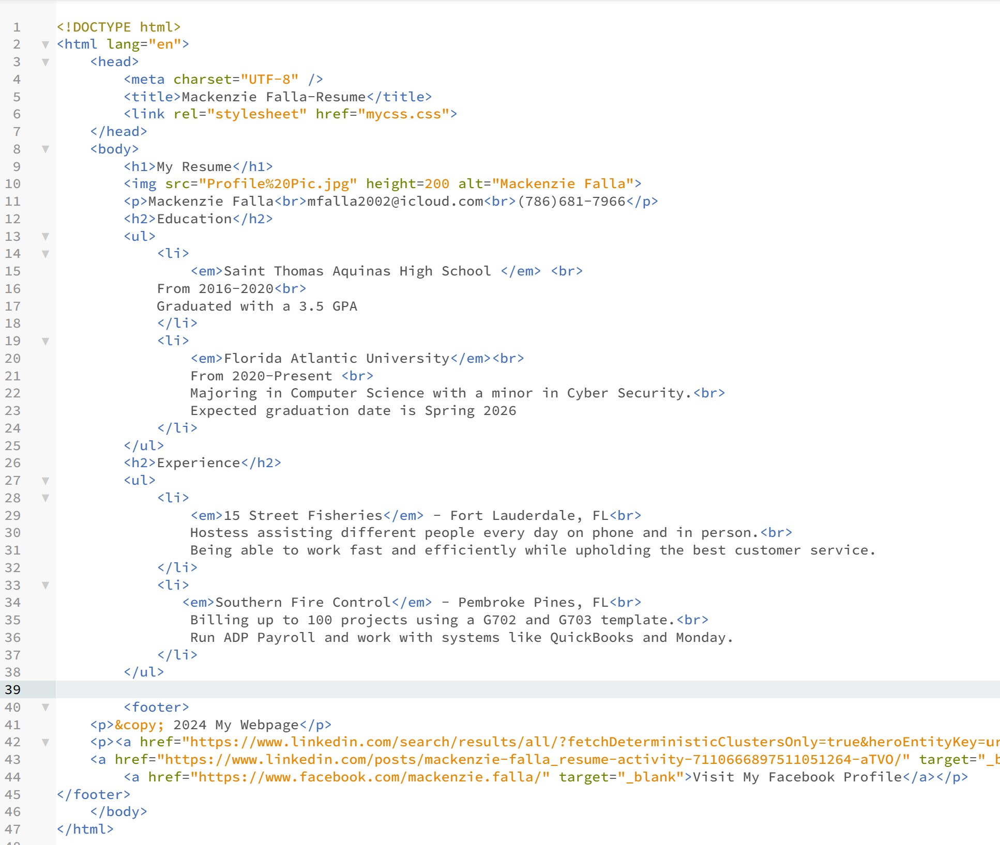
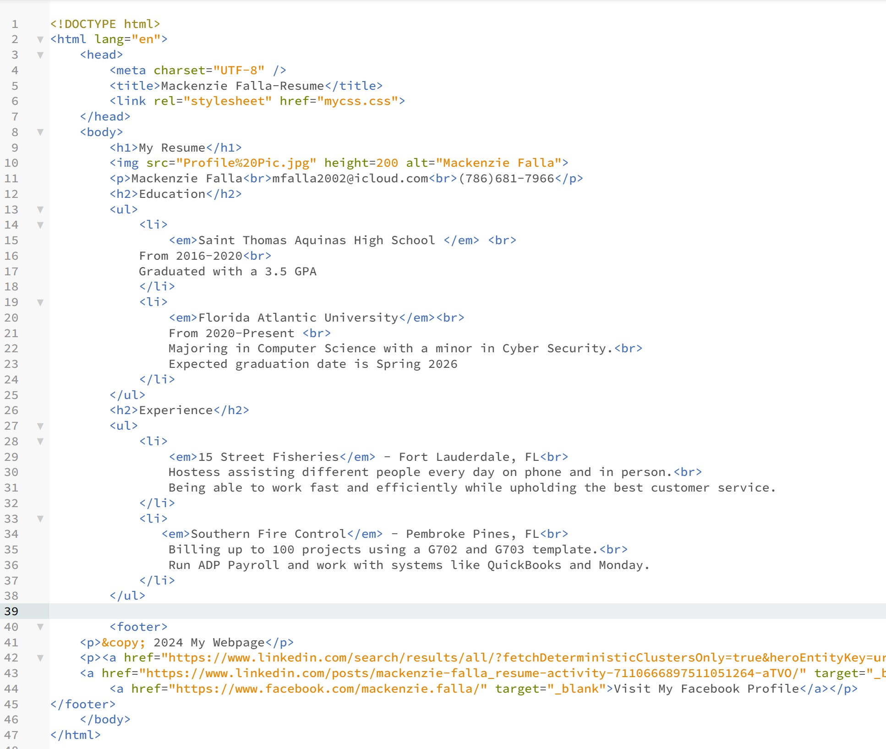

My Resume
 

Mackenzie Falla
mfalla2002@icloud.com
If you have an questions about future employment please call me at (786)681-7966 Monday-Friday from 8am-8pm.
Education
-
Saint Thomas Aquinas High School
From 2016-2020
Graduated with a 3.5 GPA
-
Florida Atlantic University
From 2020-Present
Majoring in Computer Science with a minor in Cyber Security.
Expected graduation date is Spring 2026
Experience
-
15 Street Fisheries - Fort Lauderdale, FL
Hostess assisting different people every day on phone and in person.
Being able to work fast and efficiently while upholding the best customer service.
-
Southern Fire Control - Pembroke Pines, FL
Billing up to 100 projects using a G702 and G703 template.
Run ADP Payroll and work with systems like QuickBooks and Monday.
| Skills |
Technical Skills |
| Fast worker |
C, C++ |
| Dedicated |
HTML |
| Hard Working |
Java Script |